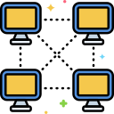

Click
here
to return to main page.

How to Host
Step by step, ever so meticulous...
Here is a list of steps for how to host my gamemode!
And if you can, I would appreciate if you gave me credit somewhere in the description.
1. Download the "Facility Gamemode" mod - click
here
.
2. Download the "Lua For Barotrauma" mod - click
here
.
3. Enable both of these mods and absolutely no other mods. Make sure they are updated.
4. Under Multiplayer click "Host Server" - be sure to enable the "Lua For Barotrauma - DedicatedServer" executable instead of the vanilla one.
5. Set submarine to "_Facility", set respawn shuttle to "_Respawn" (and make sure it's enabled) and set mode to "Sandbox".
6. Done! Have fun hosting, and if you run into any issues, contact me on my discord server - click
here
.